确定方案为使用 Controlnet 控制图片生成
旨在达到图中效果，根据控制图片的规范生成图片的轮廓，细节交由模型自己生成
python = 3.10
torch = 1.13.1+cu117
pip install requirements.txt -r
or
copy kunhu10 conda创建的 diff 虚拟环境
diffusion 基础模型为 stable-diffusion-xl-base-1.0
存储在 /train21/intellQA/permanent/kunhu10/diffusers-main/base_models/stable-diffusion-xl-base-1.0
图片 caption 模型 Blip 模型存储在 /train21/intellQA/permanent/kunhu10/diffusers-main/base_models/blip-image-captioning-large
为了确定 diffusers (diffusers-main/examples/controlnet/train_controlnet_sdxl.py) 代码的可行性，使用 fill50k 数据集进行了验证
该数据集具有如下格式，目标图片，控制图片，以及文本描述文件 train.jsonl，如下
{"text": "pale golden rod circle with old lace background", "image": "images/0.png", "conditioning_image": "conditioning_images/0.png"}
/train21/intellQA/permanent/kunhu10/diffusers-main/dataset/controlnet/fill50k/中，其中包括如下文件-fill50k\
---conditioning_image\
---iamges\
---fill50k.py
---train.jsonl
由于数据下载在本地，对 fill50k.py 进行修改给定数据存储路径:
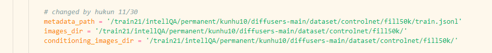
加载数据集时使用 dataset 中的 load_dataset 方法加载
from datasets import load_dataset
dataset = load_dataset(train_data_dir)
controlnet.sh 文件中修改数据集路径 train_data_dir 为对应 py 文件位置，脚本文件位置 /train21/intellQA/permanent/kunhu10/diffusers-main/controlnet.sh🤗训练代码解释: train_controlnet_sdxl.py
def log_validation()def import_model_class_from_model_name_or_path()def parse_args()train.jsonl 中各个数据键值对的名称对应def get_train_dataset()load_dataset 方法以及 image_column text_column conditioning_column 加载数据，返回初始数据集def encode_prompt(prompt_batch,text_encoders)text_encoder 转换为文本特征def prepare_train_dataset()def collate_fn()pixel_values, conditioning_pixel_values, prompt_ids, unet_added_conditionsmain() 函数text_encoder,noise_scheduler,vae,unet,controlnet, 并指定只训练 controlnet 部分的参数vae.requires_grad_(False)
unet.requires_grad_(False)
text_encoder_one.requires_grad_(False)
text_encoder_two.requires_grad_(False)
controlnet.train()
compute_embeddings() 函数，使用 encode_prompt() 函数对文本部分计算 embeddings 并加载进数据集选取26键整个整盘的皮肤，统一 reshape 为 512×512 分辨率大小，并描边出conditioning_image 如下
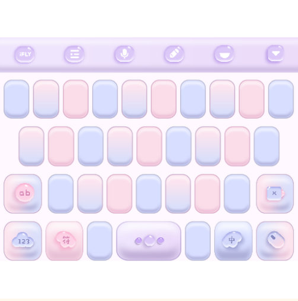 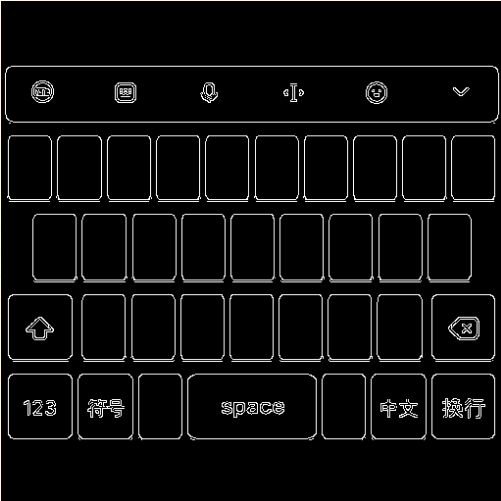
描边方法使用轮廓检测方法，cv2.Canny，控制图片也要调整为同样大小分辨率，所有目标图片都使用了同一张控制图片
import cv2
from PIL import Image
image = cv2.imread("./..")
low_threshold = 50
high_threshold = 80
canny_image = cv2.Canny(image,low_threshold,high_threshold)
所有数据存储在 /train21/intellQA/permanent/kunhu10/diffusers-main/dataset/controlnet/keyboard_50/,包含如下文件
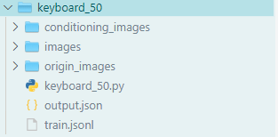
其中 keyboard_50.py 中同样修改了metadata_path，images_dir 以及 conditioning_images_dir
对于图片的文本标签，使用 Blip 模型进行注释，将文本注释保存在 train.jsonl 中，实现
from PIL import Image
from transformers import BlipProcessor, BlipForConditionalGeneration
import os
processor = BlipProcessor.from_pretrained("/train21/intell0A/permanent/kunhu10/diffusers-main/base_models/blip-image-captioning-large")
model = BlipForConditionalGeneration.from_pretrained("/train21/intellQA/permanent/kunhu10/diffusers-main/ \\
base_models/blip-image-captioning-large").to("cuda:0")
dataset_path = './dataset/controlnet/keyboard_102/images/'
image_list = []
text_list = []
for i in range(0,102):
raw_image = Image.open(dataset_path + f'{i}.png')
image_list.append(raw_image)
text_list.append("a keyboard skin of")
inputs = processor(image_list, text_list, return_tensors="pt").to("cuda:2")
out = model.generate(**inputs)
import json
# 生成jsonl文件
output_json_path = './dataset/controlnet/keyboard_102/train.jsonl'
new_jsonl = []
# 遍历每一张图片的"image"
for i in range(len(out)):
image_info = {"text": processor.decode(out[i], skip_special_tokens=True)+",iflyskin", "image": f"images/{i}.png",\\
"conditioning_image": f"conditioning_images/{i}.png"}
new_jsonl.append(image_info)
# 将jsonl数据写入到jsonl文件中
with open(output_json_path, 'w') as json_file:
for image_info in new_jsonl:
json_line = json.dumps(image_info, indent=None)
json_file.write(json_line + '\n')
具体可参考 /train21/intellQA/permanent/kunhu10/diffusers-main/caption.py 文件
controlnet.sh 中的数据集路径 train_data_dir 即可训练，训练代码不做修改diffusers-main 中封装好了用于推理步骤的 pipeline 用于生成图片，使用方法如下：from diffusers import StableDiffusionXLControlNetPipeline, ControlNetModel, UniPCMultistepScheduler
from diffusers.utils import load_image
import torch
base_model_path = "/train21/intellQA/permanent/kunhu10/diffusers-main/base_models/stable-diffusion-xl-base-1.0
controlnet_path = "/train21/intellQA/permanent/kunhu10/diffusers-main/saved_models/controlnet_sdxl/test_version_24/checkpoint-16000/controlnet" # 待测试的controlnet保存位置
controlnet = ControlNetModel.from_pretrained(controlnet_path, torch_dtype=torch.float16) #加载controlnet
pipe = StableDiffusionXLControlNetPipeline.from_pretrained(
base_model_path, controlnet=controlnet, torch_dtype=torch.float16
)
pipe.to("cuda")
# speed up diffusion process with faster scheduler and memory optimization
pipe.scheduler = UniPCMultistepScheduler.from_config(pipe.scheduler.config)
# remove following line if xformers is not installed or when using Torch 2.0
pipe.enable_xformers_memory_efficient_attention()
# memory optimization
pipe.enable_model_cpu_offload()
prompt = "a picture of ..."
control_image = load_image("....")
generator = torch.manual_seed(0)
image = pipe(
prompt=prompt,image=control_image,num_inference_steps=20,generator=generator
).images[0]
StableDiffusionXLControlNetPipeline 还支持包括tensor类型的text_embeds，以及image_embeds 等多种输入，输出类型也有 tensor, numpy_array, image 多种，具体可查看 /train21/intellQA/permanent/kunhu10/diffusers-main/src/diffusers/pipelines/controlnet/pipeline_controlnet_sd_xl.py 中定义的 StableDiffusionXLControlnetPipeline类
批量推理图片 /train21/intellQA/permanent/kunhu10/diffusers-main/inferece.py 中实现
在使用 50 张较好图片训练 3000 step 以及 6000 step 的结果如下
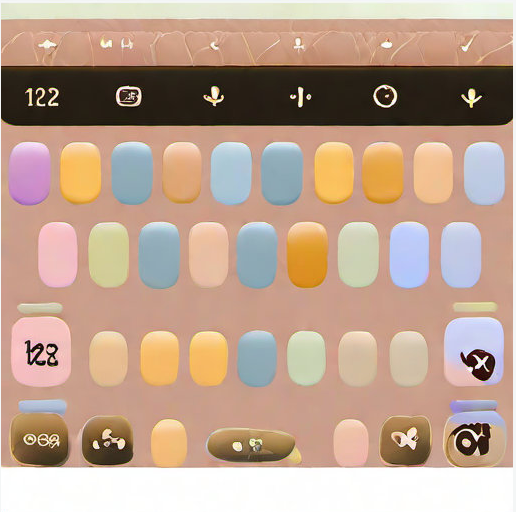 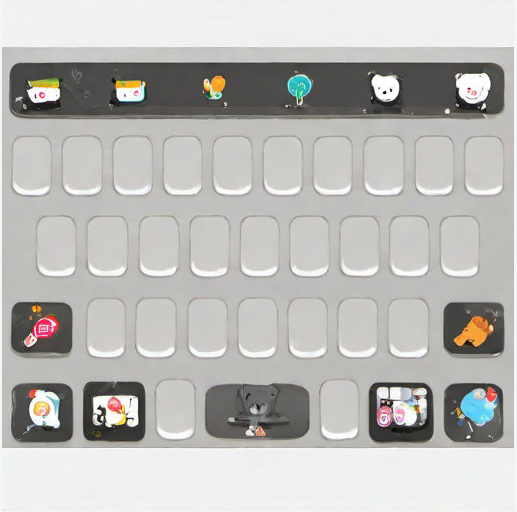
🤗使用同一 conditioning_image
收集该类皮肤数据并统一大小，共收集 2000 张，保存于 /train21/intellQA/permanent/kunhu10/diffusers-main/dataset/controlnet/keyboard2k 中
在 keyboard2k 数据集下，使用的控制图片都是下面的 同一张，旨在通过同一张控制图片回归到不同的皮肤，增强皮肤生成的多样性
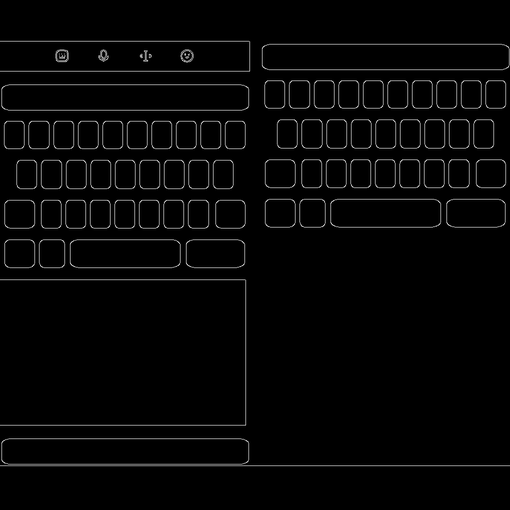
/train21/intellQA/permanent/kunhu10/diffusers-main/dataset/controlnet/keyboard2k/keyboard2k.py 对数据集路径已经进行了修改
由于 2k 张图片中大部分不同部分的图层叠加不正确，又重新筛选了对应关系较好的数据，共102张 (底图反映在预览图上，且具有键盘样式)，数据文件以及数据集构建方法在 /train21/intellQA/permanent/kunhu10/diffusers-main/dataset/controlnet/keyboard_102/ 中
🤗conditioning_image 渲染文字
尝试在控制图片上渲染上目标图片的文字，达到生成皮肤中按要求出现文字的目的
使用 paddle OCR 检测出文本所在 box 以及文本，将准确度大于0.98 的文本渲染到统一的描边背景上
实现在 /train21/intellQA/permanent/kunhu10/GlyphControl/ocr.py 中，主体如下：
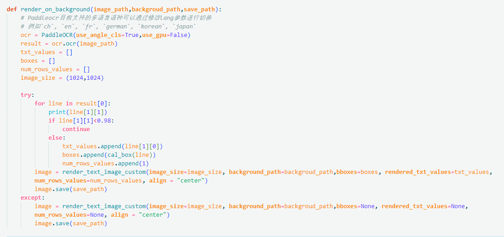
.so 文件等，考虑 module load gcc/xxx 和 module load cuda/11.7tools/infer/utilify.py 中的参数，具体参考(https://blog.csdn.net/weixin_47151919/article/details/122066480)渲染文字后的描边图构建的数据集保存在/train21/intellQA/permanent/kunhu10/diffusers-main/dataset/controlnet/keyboard_102/ 中
--resolution--controlnet_model_name_or_path ，为微调的基础模型路径| 实验编号 | type | dataset-size | conditioning-image | resolution | 备注 |
|---|---|---|---|---|---|
| 1 | 从头训练 | 2k | 所有数据使用同一控制图 | 512 | 多样性较好，图层叠加不对应 |
| 2 | 从头训练 | 102 | 所有数据使用同一控制图 | 512 | 图层叠加对应，训练到稳定结构后理解文本差 |
| 3 | 微调 Canny | 102 | 所有数据使用同一控制图 | 512 | |
| 4 | 从头训练 | 102 | 每张控制图渲染对应文字 | 1024 | |
| 5 | 微调 Canny | 102 | 每张控制图渲染对应文字 | 1024 | 结构稳定文本理解较好，多样性一般 |
/train21/intellQA/permanent/kunhu10/GlyphControl/image_path_folder/ 中load_image 函数中，定义了每个按键元素的大小以及位置/train21/intellQA/permanent/kunhu10/GlyphControl/merge_image.py 中/train21/intellQA/permanent/kunhu10/diffusers-main/dataset/controlnet/keyboard_332_512/ 以及 /train21/intellQA/permanent/kunhu10/diffusers-main/dataset/controlnet/keyboard_332_1024/ 中，二者分辨率不同accelerate config 进行选择或者在home目录下更改 .cache/huggingface/accelarate/defaut_config.yaml 文件，如修改为8卡并行的配置如下compute_environment: LOCAL_MACHINE
distributed_type: MULTI_GPU
downcast_bf16: 'no'
gpu_ids: all
machine_rank: 0
main_training_function: main
mixed_precision: 'no'
num_machines: 1
num_processes: 8
rdzv_backend: static
same_network: false
tpu_env: []
tpu_use_cluster: false
tpu_use_sudo: false
use_cpu: false
监督是否生成可识别文本，数据中需包含正确文本的标签以及图片中文本所在区域信息
在 train.jsonl 文件中进行了修改，此时每一行为如下键值对，保存在 /train21/intellQA/permanent/kunhu10/diffusers-main/dataset/controlnet/keyboard_332_512/
{"text":"a picture of a girl with long hair, iflyskin, writing \"前往 \","image":"images/0.png",
"conditioning_image":"conditioning_images/0.png",
"box":[[[430.0,174.0],[450.0,174.0],[450.0,186.0],[430.0,186.0]]]}
对数据集加载方法 (/train21/intellQA/permanent/kunhu10/diffusers-main/dataset/controlnet/keyboard_332_512/keyboard_332_512.py) 进行修改，添加新的数据格式多维数组
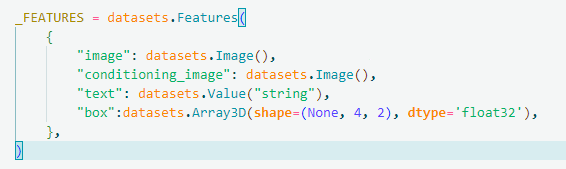
对于数据集准备以及加载dataloader的部分进行修改，保存于 /train21/intellQA/permanent/kunhu10/diffusers-main/train_controlnet_sdxl_own.py 中
修改 prepare_train_dataset 函数中 process_train 如下：
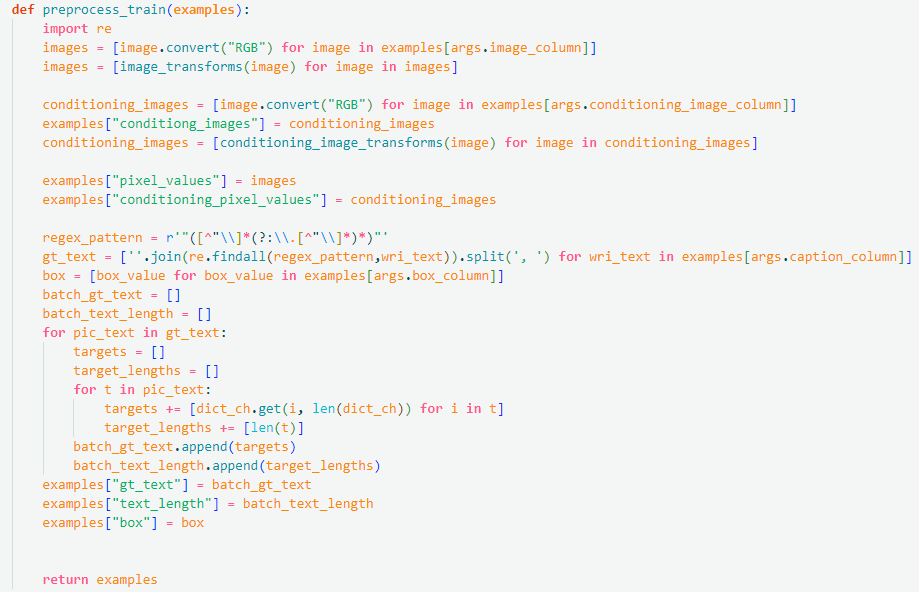
修改 collate_fn 函数如下：
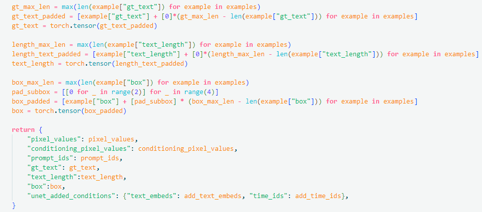
其中 gt_text,text_length,box 是每条数据新增的输入类型，分别表示ground-truth的文本标签，文本长度以及文本框位置，用于监督文本生成
🤗train_controlnet_sdxl_own.py 修改
添加用于ppocr识别的字典，即使用一个保存了常见汉字符的文本文件创建dict
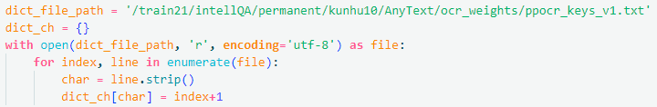
初始化了用于文本识别的ppocr模型，其相关实现以及模型权重保存在 /train21/intellQA/permanent/kunhu10/diffusers-main/Anytext/ 中, text_recognizer 用于后续在训练过程中对监督推理图片中的文本部分
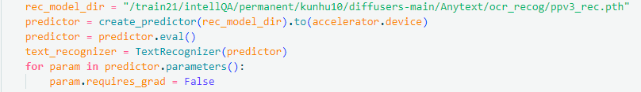
在训练过程中边训练边推理当前模型的出图结果，使用 infer_img 函数实现推理过程
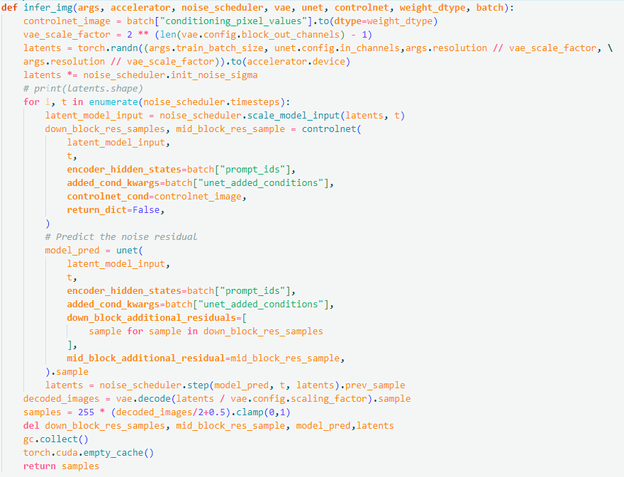
给定当前 batch 以及 vae,unet (冻结) 以及 controlnet (训练) 模型，即可得到输出 images tensor
计算 ctc_loss 的实现在/train21/intellQA/permanent/kunhu10/diffusers-main/Anytext/recognizer.py 中。本实验中使用 OCR_ctcloss 函数接收预测图片以及标签计算损失
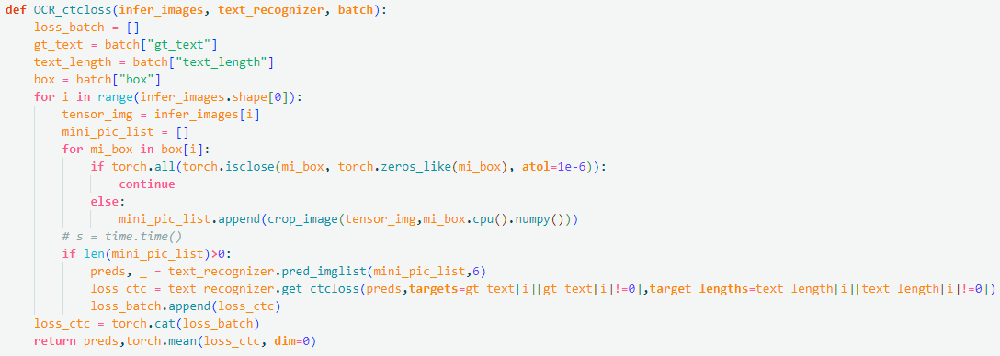
一次forward 计算 loss_ctc 的过程如下
for epoch in range(first_epoch,args.num_train_epochs):
for step,batch in enumerate(train_dataloader):
infer_images = infer_img(args,accelerator,noise_scheduler,vae,unet,controlnet,weight_dtype,batch)
preds,loss_text = OCR_ctcloss(infer_images,text_recognizer,bacth)
loss_text = loss_text.to(accelerator.device)
模型训练脚本文件保存为 /train21/intellQA/permanent/kunhu10/diffusers-main/controlnet_own.sh